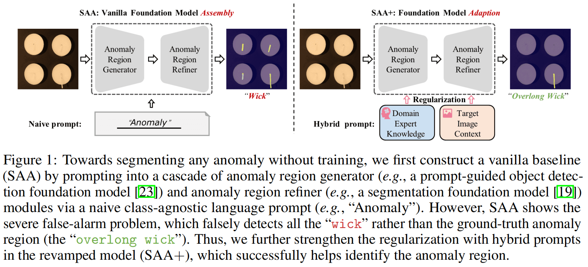

SAA+
Segment Any Anomaly without Training via Hybrid Prompt Regularization
中国华中科技大学数字制造设备与技术国家重点实验室
摘要
我们提出了一个新的框架，即分段任意异常+（SAA+, Segment Any Anomaly +），用于混合快速正则化的零快速异常分割，以提高现代基础模型的适应性。现有的异常分割模型通常依赖于特定领域的微调，限制了它们在无数异常模式上的泛化。在这项工作中，受到基础模型强大的零镜头泛化能力的启发，我们首先探索它们的组装，以利用不同的多模态先验知识进行异常定位。对于非参数基础模型对异常分割的自适应，我们进一步引入了来自领域专家知识和目标图像上下文的混合提示作为正则化。我们提出的SAA+模型在几个异常分割基准测试上取得了最先进的性能，包括VisA、MVTec-AD、MTD和KSDD2。code:https://github.com/caoyunkang/Segment-Any-Anomaly
介绍
异常分割模型[1,2,3]在工业质量控制[4,5]和医学诊断[6]等各个领域都引起了人们极大的研究兴趣。可靠异常分割的关键是区分异常数据的分布。具体来说，本文考虑了图像上的零样本异常分割（ZSAS, zero-shot anomaly segmentation），这是一种很有前途但未探索的设置，在训练过程中没有为目标类别提供正常和异常图像。
由于缺乏用于训练的异常样本，许多工作都致力于无监督或自监督的异常分割，其目标是在训练过程中学习正常样本的表示。然后，通过计算测试样本与学习到的正态分布之间的差异，可以对异常进行分割。具体来说，这些模型，包括基于自动编码器的重建[7,8,9,10,11,12]、一类分类[13,14,15]和基于记忆的正态分布[3,2,16,17,18]方法，通常需要对特定的有限的类别训练单独的模型。然而，在现实场景中，有数以百万计的工业产品，为单个对象收集大型训练集没有成本效益，这阻碍了在需要高效部署的情况下，例如生产的初始阶段，它们的部署。
最近，基础模型，如SAM [19]和CLIP [20]，通过提示[21,22]检索存储在这些模型中的先验知识，显示出了巨大的零镜头视觉感知能力。在这项工作中，我们想探索如何适应基础模型来实现异常分割下的零样本迁移能力。
图1：为了在没有训练的情况下分割任何异常，我们首先通过简单的类不可知语言提示（如“异常”），提示进入异常区域生成器（如提示引导目标检测基础模型[23]）和异常区域细化器（如分割基础模型[19]）模块来构建一个相对没有新意的基础模型（SAA）。然而，SAA显示了严重的误警报问题，它错误地检测到所有的“灯芯”，而不是ground-truth异常区域（“过长的灯芯”）。因此，我们在改进的模型（SAA+)中进一步加强了混合提示的正则化，成功地帮助识别了异常区域。
为此，如图1所示，我们首先通过级联提示引导的目标检测[23]和分割基础模型[19]，构造一个普通的基础模型，即分别作为异常区域生成器和异常区域细化器（SAA）。根据解锁基础模型知识[24,25]的实践，使用朴素语言提示，如“缺陷”或“异常”，来分割目标图像所期望的异常。具体来说，语言提示用于提示异常区域生成器为所需的异常区域生成提示条件的框级区域。然后在异常区域细化器中对这些区域进行细化，以产生最终的预测，即用于异常分割的掩模。
然而，如图1所示，普通的基础模型装配（SAA）往往会导致严重的误报，例如，SAA错误地将所有的灯芯称为异常，而只有超长的灯芯是真正的异常，我们将其归因于幼稚的语言提示带来的歧义。首先，当面对基础模型的预训练数据分布与下游数据集之间的域转换时，传统的语言提示可能会变得无效。其次，目标的“异常”程度取决于对象上下文，这对于朴素的粗粒度语言提示，例如“异常区域”，很难准确地表达。
因此，超越幼稚的语言提示，我们将领域专家知识和目标图像纳入我们改进的框架上下文，即分段任何异常+（SAA+）。一方面，专家知识提供了在开放世界场景中与目标相关的异常情况的详细描述。我们利用更具体的描述作为上下文提示，有效地对齐预训练和目标数据集中的图像内容。另一方面，我们利用目标图像上下文来可靠地识别和自适应地校准异常分割预测[26,27]。通过利用目标图像中丰富的上下文信息，我们可以准确地将对象上下文与最终的异常预测联系起来。
从技术上讲，除了单纯的类不可知的提示外，我们还利用领域专家知识来构建面向目标的异常语言提示，即特定于类的语言表达式。此外，由于语言不能准确地检索具有特定对象特征的区域，如数量、大小和位置，精确地[28,29]，我们以阈值过滤器的形式引入对象属性提示。这些提示有助于识别和删除不满足所需属性的候选区域。此外，为了充分利用目标图像的上下文，我们建议利用图像显著性和区域置信度排序作为提示，通过考虑一个区域与图像内其他区域之间的相似性，如欧氏距离，来建模一个区域的异常程度。最后，我们进行了彻底的实验，以确认我们的混合提示在适应基础模型的零镜头异常分割的有效性。具体来说，我们最终的模型（SAA+）在零镜头设置下，在各种异常分割数据集上获得了新的最新性能。总之，我们的主要贡献是：
我们提出了异常分割的SAA框架，允许在不需要训练的情况下协同组装不同的基础模型。
我们引入混合提示作为一种正则化技术，利用领域专家知识和目标图像上下文来适应基础模型进行异常分割。这导致了SAA+的开发，这是我们框架的一个增强版本。
我们的方法在几个基准数据集上实现了最先进的零镜头异常分割，包括VisA、MVTec-AD、KSDD2、MTD的性能。值得注意的是，SAA/SAA+在不需要任何注释的情况下检测与纹理相关的异常方面显示出了显著的能力。
SAA：针对ZSAS的基础模型组装
问题定义：ZSAS
零样本异常分割（ZSAS， Zero-shot Anomaly Segmentation）
ZSAS的目标是对新对象进行异常分割，而不需要任何相应的对象训练数据。ZSAS试图创建一个基于空训练集∅的异常映射\(\mathbf{A}\in[0,1]^{h\times w\times1}\)，以识别包含新对象的图像\(\mathbf{I}\in\mathbb{R}^{h\times w\times3}\)中单个像素的异常程度。ZSAS任务有可能显著减少对培训数据的需求，并降低与实际检查部署相关的成本。
基线模型：SAA
分段任何异常（SAA，Segment Any Anomaly）
对于ZSAS，我们首先构建一个普通的基础模型组件，即分段任何异常（SAA），如图1所示。
图1：为了在没有训练的情况下分割任何异常，我们首先通过简单的类不可知语言提示（如“异常”），提示进入异常区域生成器（如提示引导目标检测基础模型[23]）和异常区域细化器（如分割基础模型[19]）模块来构建一个相对没有新意的基础模型（SAA)。
具体来说，给定一个特定的异常分割查询图像，我们首先使用语言作为初始提示，通过一个异常区域生成器粗略地检索粗糙的异常区域建议，即GroundingDINO[23]。然后，使用异常区域细化器将异常区域建议细化为像素级高质量的分割掩模，其中使用提示驱动的分割基础模型，即SAM [19]。
异常区域发生
随着语言视觉模型的蓬勃发展，一些基础模型[24,23,46]逐渐获得了通过语言提示检索图像中对象的能力。给定描述要检测区域的语言提示T，例如“异常”，基础模型可以为查询图像i生成所需区域i。在那里，我们将区域检测器的结构基于文本引导的开集对象检测结构，用于视觉grounding。具体来说，我们采用了一个已经在[41]上预先训练过的大规模语言视觉数据集的GroundingDINO[23]架构。该网络首先通过文本编码器和视觉编码器分别提取语言提示符和查询图像的特征。然后用交叉模态解码器以边界框的形式生成粗糙的对象区域。给定边界盒级区域集RB及其对应的置信度评分集S，异常区域生成器（生成器）的模块可以表示为： \[\mathcal{R}^{B},\mathcal{S}:=\mathrm{Generator}(\mathbf{I},\mathcal{T})\]
异常区域细化
为了生成像素级的异常分割结果，我们提出了异常区域细化器，将边界盒级的异常区域候选区域细化为异常分割掩模集。为此，我们使用了一个复杂的基础模型来进行开放世界的视觉分割，即SAM [19]。该模型主要包括一个基于vit的[56]主干和一个提示条件掩码解码器。具体来说，该模型是在一个具有10亿个细粒度掩模的大规模图像分割数据集[19]上进行训练的，这使得在开放集分割下能够具有高质量的掩模生成能力。有提示条件的掩码解码器接受各种类型的提示作为输入。我们将边界框候选RB视为提示，得到像素级分割掩模r。异常区域细化器（Refiner）的模块可以表述如下： \[\mathcal{R}:=\operatorname{Refiner}(\mathbf{I},\mathcal{R}^B)\] 在此之前，我们以具有相应置信度分数s的高质量分割掩模R的形式获得了区域集。综上所述，我们总结了框架（SAA）如下： \[\mathcal{R},\mathcal{S}:=\text{SAA}(\mathbf{I},\mathcal{T}_n)\] 其中Tn是一个朴素的类不可知的语言提示，例如”异常“，在SAA中使用。
基线模型组件的ZSAS性能分析
我们提出了一些初步的实验来评估基础模型组装对ZSAS的有效性。尽管解决方案的简单和直观，我们观察到一个语言歧义的问题。具体来说，某些语言提示，如“异常”，可能无法检测到所需的异常区域。例如，如图1所示，所有的“灯芯”都被SAA用“异常”提示符错误地识别为异常。
我们将这种语言歧义归因于训练前的语言-视觉数据集和目标ZSAS数据集之间的领域差距，这意味着一些语言提示可能具有不同的含义，并在不同的数据集中与不同的图像内容相关联。此外，在这些大规模的数据集中几乎没有像“异常”这样的形容词表达，这使得这种快速的设计很难理解什么是异常区域。此外，确切的“异常”是特定于对象的，并且会因对象而变化。例如，它表示皮革上的划痕或榛子上的裂缝。语言歧义问题导致ZSAS数据集中严重的误警报。我们建议引入由领域专家知识和目标图像上下文生成的混合提示，以减少语言歧义，从而实现更好的ZSAS性能。
SAA+：通过混合提示正则化的自适应基础模型
为了解决SAA中的语言歧义并提高其在ZSAS上的能力，我们提出了一个名为SAA+的升级版本，它包含了混合提示，如图2所示。除了利用从预先训练过的基础模型中获得的知识外，SAA+还利用领域专家知识和目标图像上下文来生成更准确的异常区域掩模。我们将在下面提供关于这些混合提示的进一步细节。
从领域专家知识中生成的提示
根据提示学习[48,54]的趋势，我们以语言的形式初始化提示，以解锁基础模型的知识。然而，当只使用朴素的语言提示“异常”时，由领域差距引起的语言歧义问题尤为严重。为了解决这个问题，我们利用了包含关于目标异常区域的有用的先验信息的领域专家知识。具体来说，尽管专家可能没有为新产品提供潜在开放世界异常的全面列表，但他们可以根据他们过去使用类似产品的经验来确定一些候选产品。领域专家知识使我们能够将朴素的“异常”提示细化为更具体的提示，以更详细地描述异常状态。除了语言提示之外，我们还引入了属性提示，以补充现有基础模型[28]中对“count”和“area”[28]等特定属性的认识不足。
异常的语言表达式作为提示
为了描述潜在的开放世界异常情况，我们建议设计更精确的语言提示。这些提示可分为两种类型：类无关的提示和类特定的提示。
类别不可知论提示（Ta）是描述非特定于任何特定类别的异常情况的通用提示，例如，“异常”和“缺陷”。尽管预先训练的数据集和目标ZSAS数据集之间存在领域差距，但我们的实证分析（5.3）表明，这些通用提示提供了令人鼓舞的初始性能。
类别特定提示（Ts）是基于对类似产品的异常模式的专家知识而设计的，以补充更具体的异常细节。我们使用预先训练的视觉语言数据集中已经使用的提示，例如“黑洞”和“白色气泡”，来查询所需的区域。这种方法重新定义了寻找异常区域的任务，以定位具有特定异常状态表达式的对象，这比利用基础模型在对象上下文中识别“异常”更简单。
通过使用来自领域专家知识的异常语言提示\(\mathcal{P}^L=\{\mathcal{T}_\mathrm{a},\mathcal{T}_\mathrm{s}\}\)提示SAA，我们生成了更精细的异常区域候选项R和相应的置信分数S。
异常对象属性作为提示
目前的基础模型[23,57]在查询具有特定属性描述的对象时存在局限性，比如大小或位置，这些对于描述异常很重要，比如“电缆左边的小黑洞”。为了整合这一关键的专家知识，我们建议使用作为规则而不是语言来表述的异常属性提示。具体来说，我们考虑了异常的位置和面积。
异常定位。异常的准确定位在区分真实异常和假阳性中起着关键作用。通常，在推理过程中，异常被期望位于感兴趣的对象内。然而，由于背景上下文的影响，异常可能偶尔会出现在被检查的物体之外。为了解决这一挑战，我们利用基础模型的开放世界检测能力来确定被检查对象的位置。随后，我们计算了潜在异常区域和被检查对象之间的并集的交集（IoU）。通过应用 expert-derived的IoU阈值，表示为\(θ_{IoU}\)，我们过滤出了IoU值低于该阈值的异常候选值。此过程确保保留的异常候选项更有可能表示位于被检查对象内的真实异常。
异常区域。由其面积所反映的异常现象的大小，也是一种可以提供有用信息的特性。一般来说，异常应小于被检查物体的大小。专家可以为所考虑的特定类型的异常提供一个合适的阈值\(θ_{area}\)。与\(θ_{area}\)目标区域不匹配的候选区域可以被过滤掉。
通过结合两个属性提示\(\mathcal{P}^P=\left\{\theta_{area},\theta_{IoU}\right\}\)，我们可以通过过滤候选区域的过滤函数（Filter）R，得到具有相应置信分数\(S^P\)的候选\(R^P\)的子集， \[\mathcal{R}^P,\mathcal{S}^P:=\mathrm{Filter}(\mathcal{R},\mathcal{P}^P)\]
来自目标图像上下文的提示
除了结合领域专家知识外，我们还可以利用输入图像本身提供的信息来提高异常区域检测的准确性。在这方面，我们提出了两个由图像上下文引起的提示。
异常显著为提示
由于预先训练的语言视觉数据集[41]和目标异常分割数据集[4,58]之间的领域差距，由[23]等基础模型生成的预测可能是不可靠的。为了校准个体预测的置信度得分，我们提出了模拟人类直觉的异常显著性提示法。具体来说，人类可以通过与周围区域[40]的差异来识别异常区域，即视觉显著性包含了指示异常程度的有价值的信息。因此，我们通过计算相应的像素特征(f)与其N个最近邻之间的平均距离，来计算输入图像的显著性映射(s)， \[\mathbf{s}_{ij}:=\frac1N\sum_{\mathbf{f}\in N_p(\mathbf{f}_{ij})}(1-\langle\mathbf{f}_{ij},\mathbf{f}\rangle)\] 式中，\((i,j)\)表示像素位置，\(N_p(\mathbf{f}_{ij})\)表示对应像素的N个最近邻，\(\langle\cdot,\cdot\rangle\)表示余弦相似度。我们使用来自大规模图像数据集[59]的预先训练好的cnn来提取图像特征，以确保特征的描述性。显著性地图表示一个区域与其他区域的不同程度。显著性提示PS定义为相应区域掩模内的指数显著性平均值， \[\mathcal{P}^S:=\left\{\exp(\frac{\sum_{ij}\mathbf{r}_{ij}\mathbf{s}_{ij}}{\sum_{ij}\mathbf{r}_{ij}})\quad|\quad\mathbf{r}\in\mathcal{R}^P\right\}\] 显著性提示提供了异常区域置信度的可靠指示。这些提示是用来重新校准基础模型生成的信心分数，产生新的调整分数\(S^S\)基于异常显著性提示\(P^S\)。这些调整分数提供一个综合措施，考虑到信心来自基础模型和地区候选人的显著性。该流程的表述如下： \[\mathcal{S}^S:=\begin{Bmatrix}p\cdot s&|&p\in\mathcal{P}^S,s\in\mathcal{S}^P\end{Bmatrix}\]
异常置信为提示
通常，一个被检查对象中的异常区域的数量是有限的。因此，我们提出异常置信度提示\(P^C\)根据图像内容识别出置信度得分最高的K个候选对象，并使用它们的平均值进行最终的异常区域检测。这是通过根据其对应的置信度得分选择前K个候选区域来实现的，如下所示， \[\mathcal{R}^C,\mathcal{S}^C:=\mathrm{Top}_K(\mathcal{R}^P,\mathcal{S}^S)\] 将单个区域及其对应的得分表示为\(r^C\)和\(s^C\)，然后我们使用这些K个候选区域来估计最终的异常图， \[\mathbf{A}_{ij}:=\frac{\sum_{\mathbf{r}^C\in\mathcal{R}^C}\mathbf{r}_{ij}^C\cdot s^C}{\sum_{\mathbf{r}^C\in\mathcal{R}^C}\mathbf{r}_{ij}^C}\] 通过提出的混合提示\((\mathcal{P}^L,\mathcal{P}^P,\mathcal{P}^S,\text{and }\mathcal{P}^C)\)，SAA在我们最终的框架中进行了正则化，即分段任何异常+（SAA+），从而做出了更可靠的异常预测。
实验
在本节中，我们首先评估SAA/SAA+在几个异常分割基准上的性能。然后，我们广泛地研究了个体混合提示的有效性。
实验设置
数据集。我们利用了四个带有像素级注释的数据集。： VisA [58]、MVTec-AD [4]、KSDD2 [60]和MTD [61]。VisA和MVTec-AD由多种对象子集组成，如电路板，而KSDD2和MTD则由纹理异常组成。总之，我们将所有这些数据集的子集分类为通常在单个图像中显示相似模式的纹理（如地毯），以及包括更多样化分布的对象（如蜡烛）。
评估指标。ZSAS性能的评估基于两个指标： (I) max-F1-pixel （Fp）[25]，它测量在最优阈值下的像素分割的F1分数；（II）max-F1-region（Fr），本文提出，以减轻最大f1像素[4]观察到的大缺陷的偏差。具体来说，我们在最优阈值下计算区域分割的f1分数，如果重叠值超过0.6，考虑预测为正。
实施细节。我们采用了GroundingDINO和分段任何模型2的官方实现来构建基线（SAA）。关于来自领域专家知识的提示的细节在补充材料中有解释。对于由图像内容诱导的显著性提示，我们使用WideResNet50 [62]网络，在ImageNet [59]上进行预训练，并根据之前的研究[40]设置N = 400。对于异常置信度提示，我们将超参数K默认设置为5。输入图像的分辨率固定为400×400进行评估。
主要结果
比较方法。我们比较了我们最终的模型，即分段任何异常+（SAA+）与几种并发的最先进的方法，包括WinClip [25]，UTAD [40]，ClipSeg [24]，和我们的香草基线（SAA）。对于WinClip，我们报告其在VisA和MVTec-AD上的官方结果。对于其他三种方法，我们使用官方实现，并使它们适应于ZSAS任务。值得注意的是，由于所有的方法都不需要训练过程，它们的性能是稳定的，方差为±0.00。
定量结果：如表1所示，SAA+方法在Fp和Fr方面均显著优于其他方法。虽然WinClip [25]、ClipSeg [24]和SAA也使用基础模型，但SAA+更好地释放了基础模型的能力，并调整它们来解决ZSAS问题。SAA+的显著性能满足了不经训练就能分割任何异常现象的期望。
定性结果：图3为SAA+与以往竞争方法的定性比较，其中SAA+取得了更好的性能。此外，可视化显示SAA+能够检测纹理异常，如皮革上的小划痕。
消融研究
在表2中，我们执行组件级分析，以消除框架中特定的提示设计。
语言提示符\((\mathcal{P}^L)\)。表2验证了来自领域专家知识的语言提示的有效性（Fp中+3.90%，Fr+4.90%）。然后，我们深入研究了Ta和Ts的有效性，这清楚地表明，一般描述和专门设计的异常描述都可以达到合理的性能。此外，它们的组合可以产生协同作用，提高异常分割性能。\(\mathcal{P}^L\)的改进有助于解锁当前基础模型[23,19]的语言驱动区域检测能力。
属性提示符\((\mathcal{P}^P)\)。除了改善整体性能，属性提示带来显著的改善（从21.83%到53.79%）纹理类别，由于过滤机制过滤掉大量的错误检测异常区域候选人通过高级特征，例如，目标图像的位置和面积。
显著性提示符\((\mathcal{P}^S)\)。表2提供了\(\mathcal{P}^S\)在异常分割的有效性的明确证据。这是因为区域显著性可以准确地描述一个区域与周围环境的偏离程度。
在图4中，我们展示了\(\mathcal{P}^S\)对异常分割的定性影响，说明了视觉显著性图可以帮助突出异常区域，即与其他区域相比更高的显著性值。通过结合\(\mathcal{P}^S\)来校准置信度分数，可以获得更精确的分割结果。例如，\(\mathcal{P}^S\)的使用可以有效地定位榛子的裂缝区域和蜡烛上的过长的灯芯。
置信度提示符\((\mathcal{P}^C)\)。通过加入异常置信度提示，我们限制了异常区域的数量，这有效地减少了假阳性，导致所有类别的Fp平均提高0.72%，如表2所示。
超参数K在PC中的影响如图5所示。从图中可以看出，随着K的提高，异常区域检测准确。然而，当K超过一定的阈值（约为K = 5）时，随着更多的区域被错误地识别为异常，性能略有下降。在K = 5左右时获得最佳结果，所有类别的平均Fp为34.85%。
结论
在这项工作中，我们探索如何在没有任何进一步训练的情况下，通过释放现代基础模型的全部力量来分割任何异常现象。基础模型装配的调整归功于快速设计，这是控制非基础模型功能的关键。因此，我们提出了一个新的框架，即分段任何异常+，利用来自专家知识和目标图像上下文的混合提示来规范无需训练的基础模型。最后，我们成功地采用了多个基础模型来解决零镜头异常分割问题，并在几个基准上获得了新的SoTA结果。我们希望我们的工作能够阐明对异常分割的无标签模型自适应的设计。
限制。由于计算的限制，我们目前没有在更大尺度的基础模型上测试我们的方法。我们已经用具有代表性的基础模型完成了对我们的方法的探索，并将在未来探讨这些模型的尺度效应。